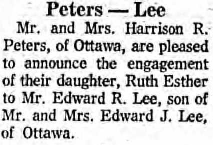

Ruth Esther Lee (née Peters)
[ Home ] | [ Calendar ] | [ Surnames Index ] | [ Census Index ] | [ Family History ]The child of Harrison Peters and Jean Berry, Ruth Peters was the fifth cousin once-removed on the father's side of Nigel Horne and was married to Edward R Lee.
Parents
- Harrison Ross was born on Mar 19, 1921
- Jean Marion
Media
Ruth Peters - Edward Lee - engagement

Family Tree
Generated by ged2site. Last updated on Jun 11, 2024